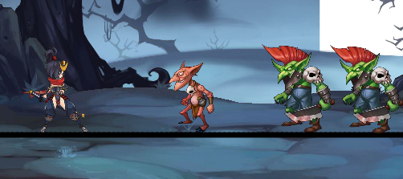
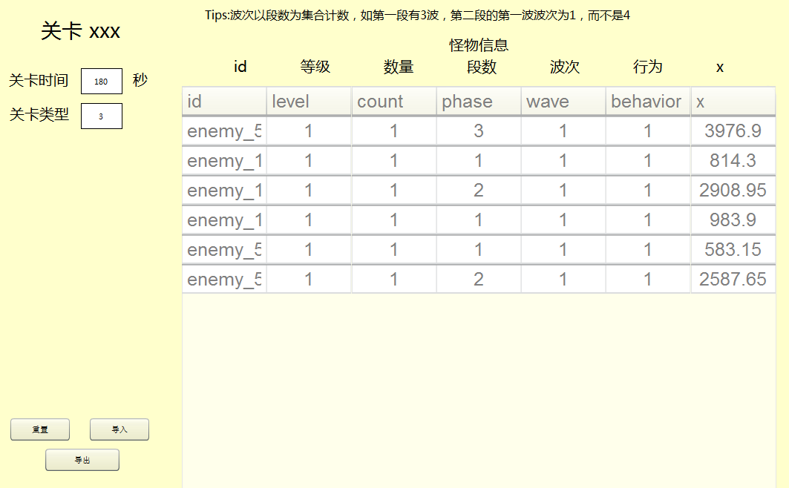

功能描述
在Flash CS中通过元件拖拽完成场景中背景，装饰物，主角，敌人等元素的布置
通过jsfl完成元件信息解析，并传递给AS做进一步处理（关键）
使用AS3编写插件面板，展示jsfl传来的信息，并通过表单，输入框等进行进一步编辑
导出配置文件
布置场景：

插件面板：

jsfl准备 jsfl——Flash Javascript，运行在Flash环境下的脚本，可以实现很多自动化操作，如批量命名，修改元件属性等。
jsfl用很多实用的方法，可参见官方文档 。这里只介绍我们需要用到的方法。
1. 遍历库元件 获取所有库元件：
1 var itemArray = fl.getDocumentDOM().library .items
会得到一个数组，我们可以通过元件名或链接名或类型来获取自己想要的元件：
1 2 3 var linkageClassName = itemArray[i].linkageClassName; var itemName = itemArray[i].name ; var itemType= itemArray[i].itemType;
有时我们会有选中某个元件的需求，可以这样：
1 fl .getDocumentDOM ().library .selectItem (itemName );
目前我们已经可以获取元件了，而我们编辑的场景也是一个元件。至此，我们可以进行下一步了，就是遍历该场景中的元素。
2. 遍历场景中元素 1 2 3 4 5 6 7 8 9 10 11 12 13 14 15 16 17 for (var k = item.timeline.layers.length - 1; k >= 0; k--) { // 遍历图层,item即为场景元件 for (var n in item.timeline.layers[k].frames) { // 遍历所有帧 for (var m in item.timeline.layers[k].frames[n].elements) { // 遍历所有帧里的可视元素 var element = item.timeline.layers[k].frames [n].elements [m] if (!element.libraryItem) { continue; } var elementName = element.libraryItem.name // 按照元件名做不同处理,可获取的信息参考 // {"name" : element.libraryItem.name, // "x" : element.x, // "y" : element.y, // "depth" : element.depth} ... } } }
自定义面板
使用Flash创建fla来制作我们的面板，而不是使用Flex，我们创建的依然是一个AS3工程。
fla发布成swc，导入工程，用AS3显示面板
编译AS3工程，生成swf文件
使用Adobe Extension Manager将swf和jsfl打包成zxp（Flash插件安装包）
Adobe Extension Manager打包需要一个mxi文件，格式大致如下：
1 2 3 4 5 6 7 8 9 10 11 12 13 14 15 16 17 18 19 20 21 22 23 24 25 26 27 28 29 <?xml version="1.0" encoding="UTF-8"?> <macromedia-extension name ="StageEditor" version ="1.0.0" type ="command" > <author name ="Wonder Yue" /> <products > <product name ="Flash" version ="11" primary ="true" /> </products > <description > <![CDATA[ ]]> </description > <ui-access > <![CDATA[ ]]> </ui-access > <license-agreement > <![CDATA[ ]]> </license-agreement > <files > <file source ="StageEditor/script.jsfl" destination ="$flash/WindowSWF/StageEditor" /> //需要打包的脚本 <file source ="StageEditor.swf" destination ="$flash/WindowSWF" /> //需要打包的swf </files > </macromedia-extension >
安装完成后我们就可以在Flash中通过“窗口>其他面板”打开我们的自定义面板了
下一节我们会介绍jsfl和AS3之间的通信，也是最关键的一步。